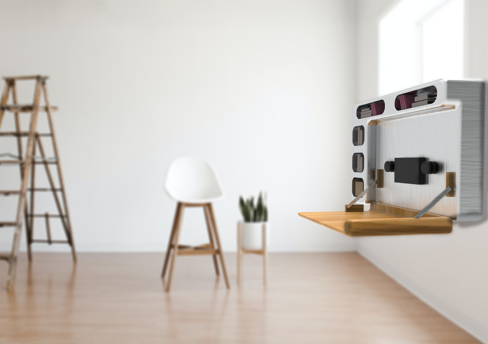
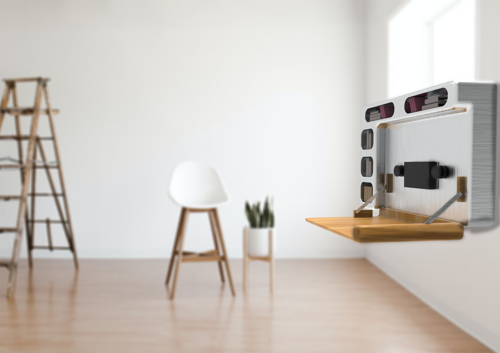

Mi Portfolio
Kubiko
Kubiko es un proyecto en parejas para ua clase de universidad que crea un equilibrio entre “concept
design” y diseño de producto.
Es una forma de crear espacios verdes en ciudades sin destruir las edificaciones existentes.
Al ser piezas modulables se pueden pedir con la forma que más convenga a la ciudad o al cliente.

 

Walkman Desk
La inspiración para este proyecto viene del rediseño de un diseño icónico. En este proyecto también
había que cambiar la función principal del diseño original.
Aquí el Walkman se convierte en un escritorio para habitaciones o casas con poco espacio.
En la foto de la derecha se demuestra cómo quedaría después de plegarlo para el ahorro del espacio.
Studio Chair
Esta silla fue una práctica personal para buscar un diseño de silla que se pudiera hacer doblando tubos
de metal.
Es una silla que puede ser encontrada en una casa, un restaurante o un studio.


Kampo Chair
Kampo Chair es un proyecto creado para un concurso de una empresa de mobiliario portuguesa llamada
CMcadeiras.
El objetivo era diseñar una silla que el material principal fuera la madera.